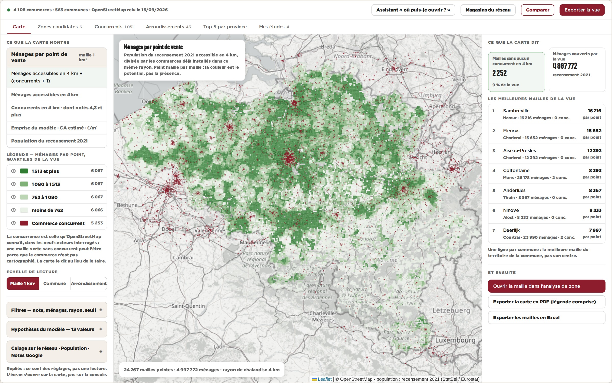
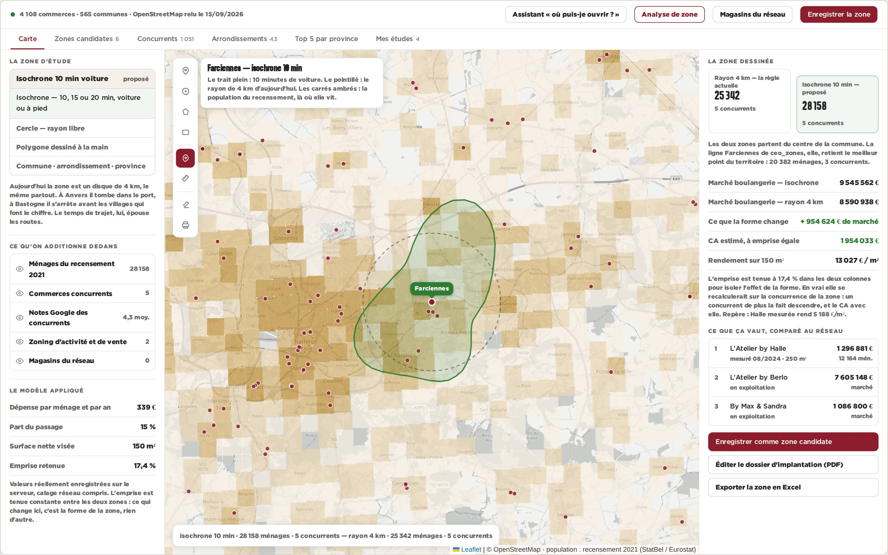
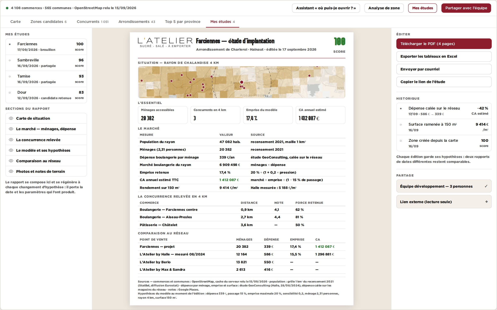

A — la carte se litLa carte peint le potentiel au lieu de pointer les concurrents : une maille d’un kilomètre carré, la population du recensement accessible en 4 km divisée par les commerces déjà installés, quatre classes et une légende chiffrée. Les 4 108 pastilles rouges deviennent une couche discrète. Les six réglages du panneau gauche se replient : ce sont des boutons de réglage, pas une lecture.

B — la zone se dessineUne boîte à outils sur la carte — point, cercle, polygone, rectangle, isochrone, mesure — et tout se recalcule dans la zone tracée. Ici l’isochrone de 15 minutes de voiture face au disque de 4 km d’aujourd’hui, à Farciennes : la forme de la zone change le marché, donc le CA estimé. Les deux colonnes sont calculées par la même arithmétique, avec les hypothèses réellement enregistrées.

C — le dossier sort tout seulCe que l’écran sait déjà calculer, mis en page : une étude d’implantation datée, avec sa carte, son marché, sa concurrence, sa comparaison au réseau et les hypothèses qui l’ont produite — en PDF et en Excel, partageable, versionnée. Aujourd’hui la sortie est un CSV de coordonnées ; un dossier se refait à la main dans un traitement de texte.
